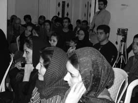

پذيرش > سایت نوشته ها > میخواهیم تصویر زن قربانی را بشکنیم
 پروین اردلان: پروین اردلان:

 میخواهیم تصویر زن قربانی را بشکنیم میخواهیم تصویر زن قربانی را بشکنیم
19 آذر 1387 - کمپین رشت - نسخه قابل چاپ
پنجم آذر، روز جهانی «محو خشونت علیه زنان» است که به همین مناسبت برنامهای با حضور خانم پروین اردلان، از فعالان حوزهی زنان و برنده جایزهی اولاف پالمه در رشت و به دعوت جمعی از فعالان زنان رشت و سازمان ادوار تحکیم وحدت گیلان در محل دفتر این سازمان برگزار شد که اردلان در این مراسم، پیرامون مسایل و مشکلات زنان سخنرانی کرد.
در این برنامه که جمعی از فعالان سیاسی و اجتماعی و جنبش زنان حضور داشتند، سخنران برنامه ضمن ابراز خوشحالی از برگزاری چنین نشستهایی در جهت آگاهیبخشی به عموم جامعه گفت: ما همواره تصویر زن قربانی و ستمدیده را داشتیم اما اکنون سعی داریم این تصویر را با مقاومت زنان بشکنیم، با مقاومت زنانی که میخواهند این خشونتها را پس بزنند و آن را از حوزهی خصوصی به حوزهی عمومی بکشانند.
پروین اردلان در ادامه افزود: این اتفاق جدید، یعنی صحبت از خشونت علیه زنان از حوزهی خصوصی به عمومی، به یمن فعالیتهای جنبش زنان بوده است. چند سال اخیر، بحث خشونت علیه زنان در حال مطرح شدن است. این مسالهی مهمی است که پرداختن به آن بر دوش همهی برابریخواهانی است که مایلند این سکوت زنانه را بشکنند و پایان بدهند.
وی ادامه داد: دستهای از خشونتها به علت قوانین مربوط به زنان است. الان بسیاری از فعالان جنبشهای اجتماعی و زنان به دنبال حذف خشونت علیه زنان هستند. و در این مدت حرکتهای خوبی انجام گرفته که یکی از آنها تغییر مفهوم خشونت از حوزهی خصوصی به حوزهی اجتماعی است.
وی با بیان اینکه بخشی از خشونتها هم مربوط به خشونتهای قانونی با برابریخواهان است گفت: ما شاهد نوعی از خشونت امنیتی و دولتی با برابریخواهان هستیم. این هم نوعی از خشونت است که در برابر مقاومت مدنی ایجاد میشود. البته در دوران دولت نهم و در سالهای گذشته با رشد جنبشهای اجتماعی روبهرو بودهایم و در این مدت علیرغم برخوردهای بسیار با فعالان مدنی و سیاسی، فعالیتها چشمگیر بوده است. گرچه در برههای با فشار و در برههای دیگر در فضایی بازتر حرکت کردهایم اما رشد و پویایی جنبشهای اجتماعی در این سالها همچنان نمود داشته است و مطالبات زنان به شدت در حال عمومی شدن است و به شدت با خشونت با آنها برخورد میشود.
پروین اردلان تصریح کرد: مجموع این فعالیتها در راستای دموکراتیزه کردن حکومت است. یعنی فعالان حوزههای مختلف به حاکمیت میگویند از مطالبات خود کوتاه نمیآیند، منتها در چارچوب مسالمتآمیز و با استفاده از راهکارهای قانونی و در این فضای تنگ روبه جلو حرکت میکنند.
بر این اساس خود فعالان زنان، و بسیاری از فعالان دانشجویی و اجتماعی با خشونتهایی مواجه هستند. میبینیم خشونت علیه زنان از موضوعات فردی شروع و به حوزههای اجتماعی کشیده شده است.
وی با ذکر مثالهایی راجع به فشار بر زنان فعال در حوزهی زنان در جوامع سنتی و اعمال خشونتهای پنهان که امکان عمومی کردنش وجود ندارد، اضافه کرد: فرض کنید یک زن کُرد مدافع حقوق زنان در مکانی سنتی زندگی میکند. این مسأله باعث میشود خشونتها علیه آن فرد چند برابر شود که نهایتاً مجبور به خودسوزی یا فرار میشوند یا قانون آنان را مجازاتهایی مثل سنگسار خواهد کرد. در این حال ابزار حمایتی و قانونی برای آن زن وجود ندارد. اینها چیزهای ناپیدایی است که وجود دارد، اما میبینیم.
یعنی خشونت پنهانی به فرد اعمال میشود ولی امکان عمومی کردنش را ندارد یا صدایی ندارد که گستردهاش کند. در حال حاضر خشونت ابعاد گستردهتری پیدا کرده و به صورت محسوس و نامحسوس در جامعه وجود دارد.
در این بخش از برنامه، پروین اردلان بخش اول صحبتهای خود را تمام کرد و سپس پرسشهای حاضران به صورت کتبی با وی مطرح شد و او نیز به آنان پاسخ داد.
یکی از حاضرین راجع به عدم وجود قوانین برای جلوگیری از خشونت مردانه پرسید که اردلان گفت: این مشکل را باید از قانونگذاران بپرسیم که چرا بندهای قانونی برای این مشکلات وجود ندارد. ولی تمام تلاش ما برای متزلزل کردن این قوانین است.
یکی دیگر از حاضران، راجع به چالشهای جنبش زنان و راهکارهای مقاومت مدنی در مقابل فشارها پرسید که این فعال جنبش زنان اشاره کرد: ما هر روز با مسایل جدیدی روبهرو میشویم. مثلاً به خاطر زن بودنتان با طرحهای جدیدی در خصوص حجاب، جنسیتی کردن گزینش کنکور و… روبهرو هستید. ایجاد جامعهی برابر هم کمی وحشت ایجاد میکند. یعنی جامعهای برابر و انسانی و تصور اینکه عدهای قدرت قبلی خود را از دست بدهند، برای خیلیها جالب نیست. با تغییر قوانین، اساساً منافع عدهای تغییر میکند.
اما ما ناگزیریم این تلاشها را داشته باشیم؛ جنبش زنان به لحاظ خواستهها و رشد فرهنگی به جای خوبی رسیده اما نمیتوان به همهی خواستهها و ایدهآلها به این سرعت رسید. این کار عملاً نیروهای وسیع و هماهنگی میخواهد. اما تداخل و تعامل جنبشها باعث میشود ما پشتیبان یکدیگر باشیم. به شکل کلی راه درازی در پیش داریم.
یکی دیگر از حاضران خطاب به پروین اردلان پرسید: شما چرا به عنوان فعال جنبش زنان به حاکمیت التماس میکنید؟ که اردلان جواب داد: طرح مطالبه با التماس کردن فرق دارد، وقتی ما اعلام میکنیم چه میخواهیم، کسی که مطالبات خود را به او میگوییم باید سعی کند به ما برسد نه ما به او. مثلاً قبلاً کاندیداهای انتخابات مجلس برنامههای خود را اعلام میکردند و ما یا به برنامههایشان اعتماد میکردیم یا نه، اما الان درخواستها و مطالباتمان را از پایین مطرح میکنیم. بنابراین کسی که خودش را به عنوان کاندیدا معرفی میکند باید برنامههایش را با خواست ما هماهنگ کند و بگوید چگونه و تا چه اندازه میتواند این مطالبات را برآورده کند. ما در گفت و گوی چهره به چهره با مردم طبقات مختلف متوجه میشویم، کدام مطالبات مربوط به کدام قشر است و این چیزی است که سایر جنبشها هم باید آن را مدنظر داشته باشند.
برندهی جایزهی اولاف پالمه در پاسخ به سوال شخص دیگری که پرسیده بود، آیا فرهنگ ایرانی با برابریخواهی مغایر نیست و چگونه میشود مطالبات واقعی جنبش زنان را رو به جلو ببریم؟ جواب داد: در این رابطه با مباحث فرهنگی و قانونی درگیریم. قانون ما عقب افتاده است اما فرهنگ ما جلوتر است. این مسأله چیزی نیست که بگوییم اول کدام و دوم کدام باشد؟ در حال حاضر با مشکلات قانونی مواجهایم که لازم است تغییراتی در آن داده شود اما به هر حال، الان فرهنگ ما جلوتر است و هر وقت توانستیم هم فرهنگ و هم قوانینمان را رو به جلو ببریم، برندهایم.
وی افزود: مثلاً در کمپین یک میلیون امضا، به یک میلیون امضا نرسیدیم اما حداقل یک میلیون نفر را داریم که با این بحث آشنایی دارند و حتی مخالف هم که باشند، بحث میکنند و این یعنی تغییر فرهنگها، اما عملاً بالا بردن سطح فرهنگی کار سختی است ولی نمیتوان گفت اولویت با یکی از آنهاست، بلکه همه مسایل را باید با هم ببینیم و شخصاً این نوع برخورد حذفی با اولویتها را نمیپذیرم.
اردلان تصریح کرد: فعالیت ما در این مدت بیسابقه بوده است. البته نیروهای جوانی که وارد این حوزه شدند با محدودیتهایی مواجه شدند که البته بهترین کار، انجام امور با کمترین هزینه و بیشترین حرکت است. در این بین گاهی عقبنشینی میکنیم اما باز ادامه میدهیم و تداوم این فعالیتها باعث ماندگاری است و خوشبختانه آنهایی که الان دارند کار میکنند، آگاهانهتر و با کمترین هزینه فعالیت میکنند.
پروین اردلان در برنامهی «محو خشونت علیه زنان» در رشت، به سوال دیگری که در خصوص حفظ استقلال جنبش زنان از دیگر جنبشهای اجتماعی بود، اینگونه پاسخ داد: این مشکلی است که وجود دارد و حفظ استقلال جنبش زنان کار سختی است، اما فعالیت حوزهی زنان برای کسب قدرت نیست پس سیاسی نیست. بلکه تغییر در وضع موجود به نفع شرایط بهتر است و این نوع فعالیتها اجتماعی محسوب میشوند. در جنبش زنان مسایلی وجود دارد که اصل است. مثلاً اگر من خواستههای برابریخواهانه دارم نمیتوانم در جنبشهای اجتماعی بروم و بگویم این خواسته و مطالبه اصل است. اما اگر در جنبشهای مختلف مثل دانشجویی بروم و او را هم با اهداف و خواستههای برابریخواهانهام همراه کنم، میتوانم این راه را پیش ببرم. اما مشکل ما بیرونریزی است، بعضی از فعالان زنان وارد جنبش دانشجویی و… میشوند و به مسایل سیاسی و… کشیده میشوند و موضوع بحث و مطالبه آنها تغییر میکند. اما اگر بتوانیم مطالبات اصلی حوزه زنان را حفظ و آنان را به درون جنبشها برده و با خود همراه کنیم، خوب است، غیر از این برای جنبش خطرناک است.
سوال بعدی هم راجع به حمایتهای مادی و معنوی از کمپین بود که این فعال جنبش زنان خاطرنشان کرد: حمایت فکری از کمپین از سوی افراد شاخص، نظریهپردازان و فلاسفه در داخل و خارج کشور است که این از نظر تبلیغاتی و پشتوانه فکری خوب است. اما حمایتها و کمکهای مالی از سوی اعضای کمپین بوده و ما از هیچ کشور و سازمان و نهاد داخل و خارج کشور کمک نگرفتهایم. البته لازم به توضیح است که اصولا جنبشهایی که قایم به منابع مالی هستند، همواره تحت این اتهام قرار میگیرند. اما منابع مالی کمپین هم از سوی اعضاست.
پروین اردلان در ادامه راجع به نوع طرح مطالباتشان گفت: ما مطالباتمان را مطرح میکنیم و اینطور نیست که فقط بگوییم و کنار بکشیم. مثل لایحهی حمایت از خانواده که تصویب آن به شکل فعلی، از حداقلهای ما بود. ما روی ائتلافهای حداقلی میتوانیم موفق شویم. اما اینکه مواضع خودمان را کنار بگذاریم یا به نفع یک جنبش دیگر کنار بکشیم، موافق نخواهیم شد. ضمن اینکه الان نیروهای ما خیلی کم است و در کنار این قضیه با موانع بزرگی هم مواجه هستیم. به تلویزیون که بزرگترین رسانه داخل کشور است، نگاه کنید که با چه سیاستها و برنامههایی پیش میرود و یکسری نکات جهتگیری شده را به افکار عمومی میآموزد. مسأله دیگر این است که ما با قدرت دیگری به نام قدرت افکار عمومی مواجهایم و مشکل ما این است که اطلاعرسانیمان کم است، اما تأثیرها بیشتر است. مثلاً در لایحه حمایت خانواده، به خاطر تأثیر حمایت جنبشها از این مسأله بود که موفق شدیم. و اگر راجع به مسایل دیگر هم همینطور حرکت شود، میتوان نتیجه گرفت.
ما به دنبال حداقلها هستیم تا حداکثر جواب را بگیریم. به هر حال فعالیت در این برهه مشکل است و میبینیم هر بار با دستگیری یک آدم موجی به وجود آمده و این افزایش پرداخت هزینه به خاطر روش و نوع سازماندهی نبوده، بلکه به خاطر نوع مطالبه بوده که برخورد با آن هزینهبردار بوده است.
شخص دیگری راجع به فعالیت جنبش زنان در انتخابات ریاست جمهوری پرسید که وی توضیح داد: اتفاقی که الان در جامعه افتاده افزایش فضای بیاعتمادی بین عموم است. بنابراین وقتی مطالبات را در بین طبقات و جنبشهای اجتماعی دنبال میکنیم به خاطر این است که حرکات و فشار از پایین را بیشتر کنیم. در این فضای بیاعتمادی حرکت کردن مشکل است و نمیشود به طور مستقیم از کسی حمایت کنیم. چون امکان دارد به راحتی بازیچه قدرت شویم.
کمپین رشت
ارسال به
بالاترین
،
توییتر
،
فریندفید
،
فیسبوک
در همين بخش :
 یک خبر تلخ؟ یک قانونشکنی؟ یک تصمیم بخشنامهای جدید؟ یک خبر تلخ؟ یک قانونشکنی؟ یک تصمیم بخشنامهای جدید؟
چرا بایست به سکسوالیته پرداخت؟ / نفیسه آزاد
آزارجنسی خانگی؛ «قربانی» نه، «نجات یافته»
زنان، بزرگترین بازندگان بهار عرب
سانسور از دیدگاه جنسیتی/الهه امانی
ديگر بخش ها :
طرح یک میلیون امضا
|
مقالات
|
سایت نوشته ها
|
اخبار
|
گزارش كمپين
|
گفت و گو
|
علیه سکوت
|
كوچه به كوچه
|
نامه های شما
|
گزارش ویژه
|
گفتگو با اعضا
|
ویژه سالگرد کمپین
|
تصویر برابری
|
دل آرام علی
|
تریبون
|
مقالات
|
تاریخ شفاهی
|
خارج از چارچوب
|
کتابخانه
|
درباره کمپین
|
کمپین در شهرها
|
کمپین در بند
|
صدای تغییر
|
ویژه 22 خرداد
|
لایحه حمایت از خانواده
|
گالری
|
عشا مومنی
|
امیر یعقوبعلی
|
خدیجه مقدم
|
راحله عسگری زاده و نسیم خسروی
|
پروین اردلان،جلوه جواهری، مریم حسین خواه، ناهید کشاورز
|
زینب پیغمبرزاده
|
سعیده امین، سارا ایمانیان، محبوبه حسین زاده، ناهید کشاورز و همایون نامی
|
احترام شادفر
|
نسیم سرابندی زاده،فاطمه دهدشتی
|
وبلاگ مهمان
|
پرونده خرم آباد
|
دستگیری ها
|
مریم مالک
|
پرستو اللهیاری
|
مهرنوش اعتمادی
|
سمیه رشیدی
|
Other Languages
|
همراهان
|
«فراخوان کمپین ده روز با بهاره هدایت»
| English
|